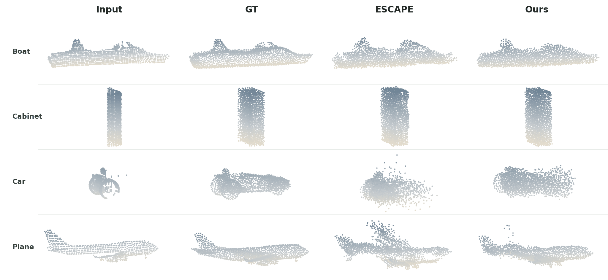
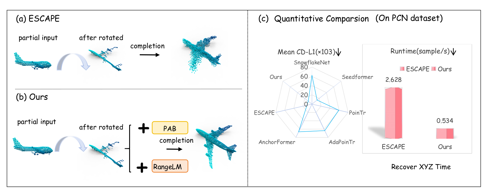

Prototype-guided structure
A training-only auxiliary branch transfers sparse complete-shape supervision to the shared representation without enlarging the inference path.
Rotation-robust point cloud completion · under review at ICLR 2027
Learn completion in range space, then recover Cartesian geometry directly in the observed pose.
A training-only prototype branch supplies complete-shape guidance, while uncertainty-aware range correction and differentiable coordinate recovery avoid a separate pose canonicalizer.
Qualitative reconstruction

Method in three moves
A training-only auxiliary branch transfers sparse complete-shape supervision to the shared representation without enlarging the inference path.
The backbone predicts anchor distances, then applies bounded corrections and learned uncertainty weights to the constraints that matter most.
A vectorized Levenberg–Marquardt solver recovers dense XYZ coordinates, with gradients through the final iterations aligning ranges to reconstruction.
Overview
Point cloud completion becomes substantially harder when a partial observation may arrive in an arbitrary orientation. Cartesian predictors inherit this pose variation, while severe occlusion limits the evidence available for the missing geometry.
PA-RangeLM addresses these two sources of error in separate training stages. Stage I learns a shape-aware anchor-distance representation with a Prototype Auxiliary Branch that is used only during training. Stage II freezes that representation and learns bounded range correction, uncertainty-driven weighting, and dense coordinate recovery.
The resulting model operates directly on the observed pose. On the full 1,200-sample rotated PCN test split, it reaches 10.20 Cartesian CD-L1 and improves all eight evaluated categories over the reproduced ESCAPE baseline, while reducing total inference time from 2.628 to 0.534 seconds per sample.
Motivation and comparison

Architecture

Quantitative results
Read the table CD-L1 is multiplied by 103 and lower is better. ESCAPE-Reprod. is the latest reproduced baseline; the highlighted column is PA-RangeLM.
| Category | SnowflakeNetICCV 2021 | SeedFormerECCV 2022 | PoinTrICCV 2021 | AdaPoinTrTPAMI 2023 | AnchorFormerCVPR 2023 | ESCAPECVPR 2025 | ESCAPE-Reprod.latest baseline | PA-RangeLMours |
|---|---|---|---|---|---|---|---|---|
| Plane | 70.49 | 16.39 | 63.81 | 65.34 | 66.15 | 8.60 | 8.98 | 7.58 |
| Cabin | 57.42 | 11.72 | 58.04 | 65.11 | 67.59 | 13.62 | 13.89 | 13.04 |
| Car | 56.23 | 11.40 | 54.14 | 56.17 | 60.81 | 10.43 | 10.77 | 10.07 |
| Chair | 59.31 | 13.02 | 60.07 | 63.73 | 67.88 | 10.71 | 11.15 | 10.36 |
| Lamp | 69.61 | 17.68 | 64.74 | 68.33 | 68.39 | 8.14 | 8.61 | 7.93 |
| Sofa | 63.22 | 15.35 | 61.70 | 66.69 | 70.06 | 13.86 | 14.45 | 13.90 |
| Table | 63.35 | 14.79 | 62.94 | 72.52 | 76.64 | 9.23 | 9.87 | 9.09 |
| Boat | 58.40 | 12.21 | 49.07 | 50.42 | 53.68 | 10.00 | 10.36 | 9.60 |
| Average | 62.26 | 14.07 | 59.31 | 63.54 | 66.40 | 10.58 | 11.01 | 10.20 |
Table 1. PCN completion under random SO(3) rotations. All values are Cartesian CD-L1 ×103; lower is better.
Anonymous release
The release contains no author names, affiliations, personal paths, analytics, or tracking identifiers.
Keep this tab open while four anonymous weight parts are combined locally.